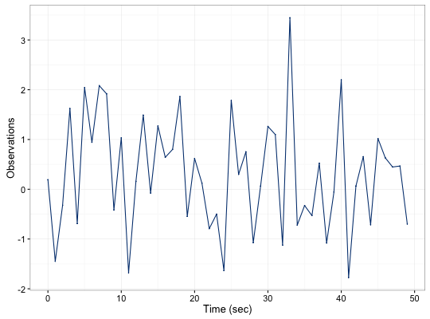
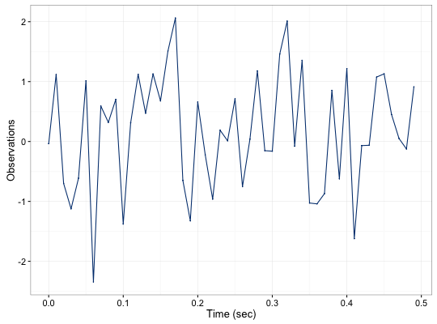

Setups a time series oriented object that works well with graphing and summary utilities
gts(data, start = 0, end = NULL, freq = 1, unit = NULL, name = NULL)
matrix, data.frame, or a numeric vector.numeric that provides the time of the first observation.numeric that provides the time of the last observation.numeric that provides the rate of samples. Default value is 1.string that contains the unit expression of the frequency. Default value is NULL.string that provides an identifier to the data. Default value is NULL.A gts object with the following attributes:
m = data.frame(rnorm(50)) x = gts(m, unit = 'sec', name = 'example') x#> example #> 1: 0.192491906485068 #> 2: -1.44670180633351 #> 3: -0.323180534047634 #> 4: 1.62229611652493 #> 5: -0.689024123596357 #> 6: 2.04212222261495 #> 7: 0.94377911190294 #> 8: 2.0819268787991 #> 9: 1.91711727878331 #> 10: -0.414812239592928 #> --- #> 41: 2.19868418440574 #> 42: -1.77390932861561 #> 43: 0.0650322264968479 #> 44: 0.654970382227184 #> 45: -0.712869108984741 #> 46: 1.02056753963664 #> 47: 0.631614719104035 #> 48: 0.447433352715578 #> 49: 0.46653706410743 #> 50: -0.698260607801304plot(x)